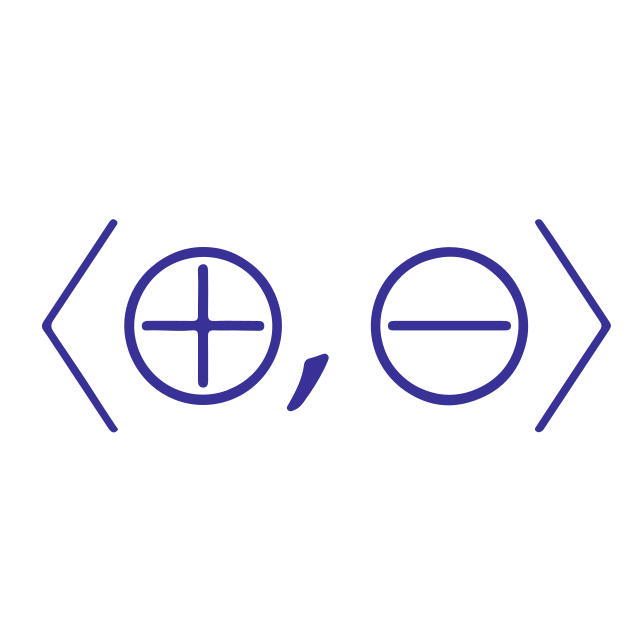

Home
Welcome
Welcome to my blog!
I've reproduced a list of recent posts here for your reading pleasure:
Posts
- A Hoare logic style refinement types formalisation - August 17, 2023
- Propositional interpolation in SSReflect - July 24, 2023
- Swierstra's Hoare monad in SSReflect - June 14, 2023
- Propositional resolution in SSReflect - April 28, 2023
- Pointfree topology and constructive mathematics - April 13, 2023
- Harrison's "Formalization and Automated Reasoning" talk - March 28, 2023
- Symbolic computation and satisfiability checking - January 9, 2023
- CDOT in Coq - November 2, 2022
- Semantics of triples - October 4, 2022
- Finite list take lemma - September 8, 2022
- Flocq lectures - September 7, 2022
- Separation logic and concurrency - July 22, 2022
- Unrealistic Models for Realistic Computations - July 7, 2022
- Data structures in the multicore age - June 21, 2022
- Bauer's realizability lectures - June 1, 2022
- Two domain theory essays - May 6, 2022
- Railway verification overview - June 25, 2021
- Constructive Strict Implication - August 19, 2020
- SASL - August 4, 2020
- Co-currying in sequent calculus - June 24, 2020
- Co-de-Brujin in Idris - June 1, 2020
…or you can find more in the archives.